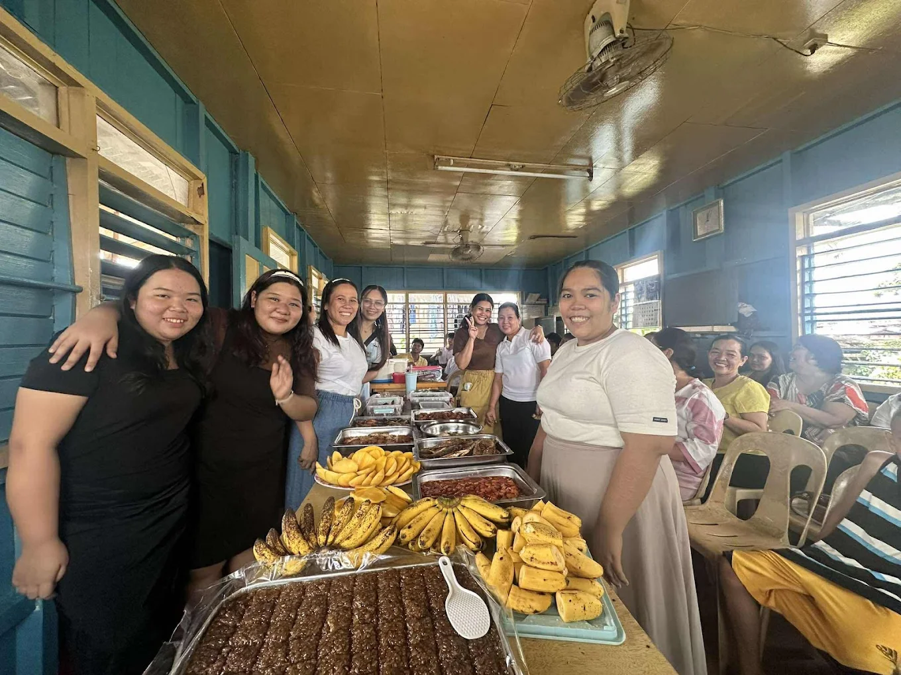
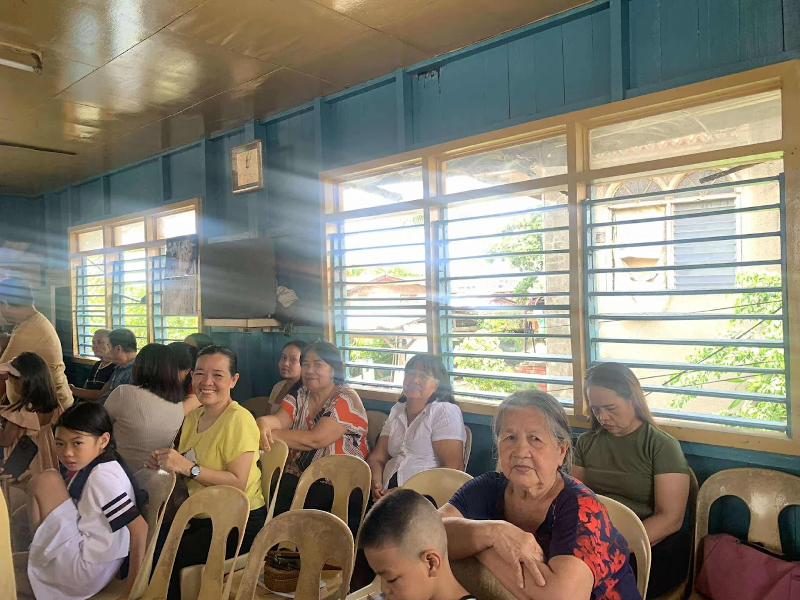
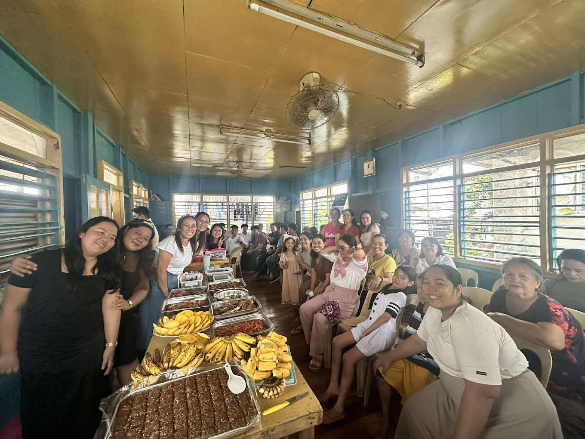
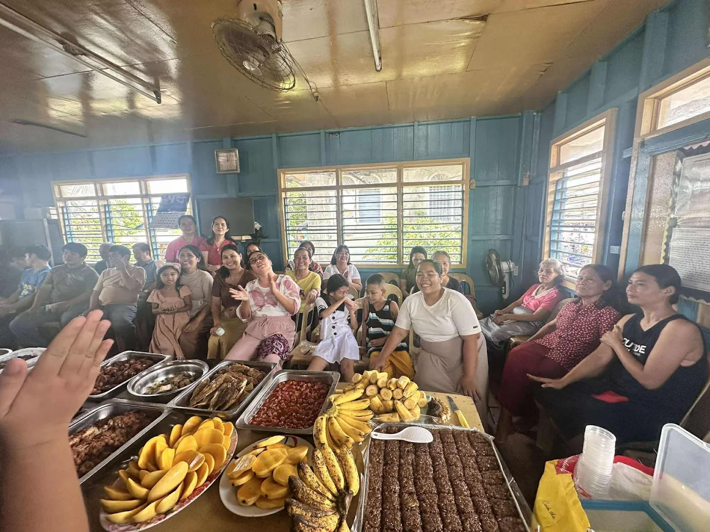
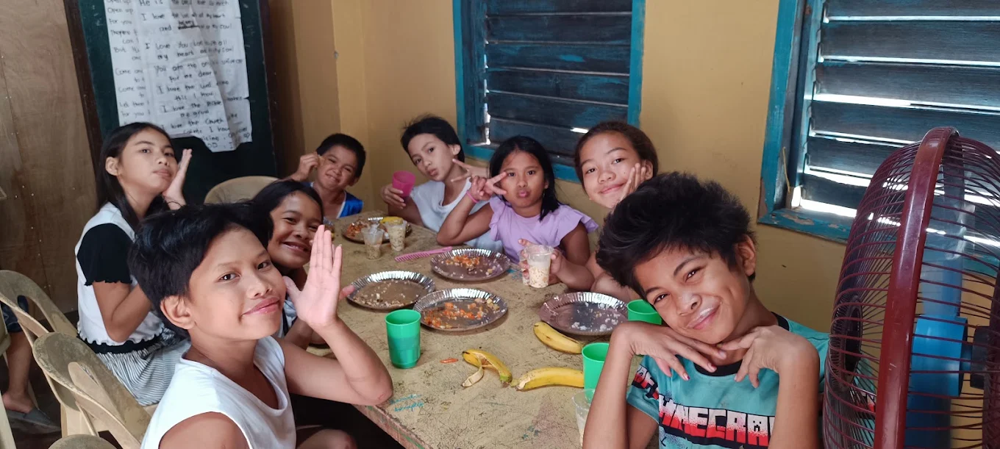

WELCOME
National Catholic Apostolic Church
Welcome to the local church community of District Mambaling (Puntod Alaska). This simple website shares a few memories, community activities, and ways to get in touch with us.
Our photographs show parishioners, families, young people, fellowship, food sharing, music, and time spent together in the church community.
Read About the ChurchChurch Community
A place for prayer, fellowship, learning, and service within the local community.
Community Photos
Photos from gatherings and activities at the church.





Contact Information
| Church | National Catholic Apostolic Church |
|---|---|
| District | District Mambaling (Puntod Alaska) |
| Contact | 0956 225 6958 |
| ncacdistmambaling@gmail.com | |
| Address | District Mambaling ( Puntod Alaska ) |